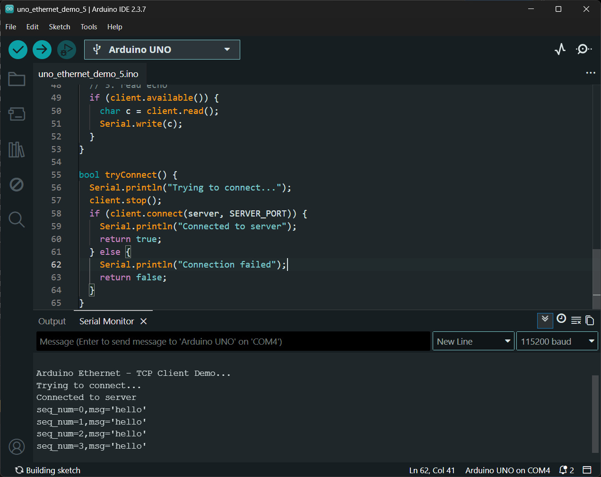
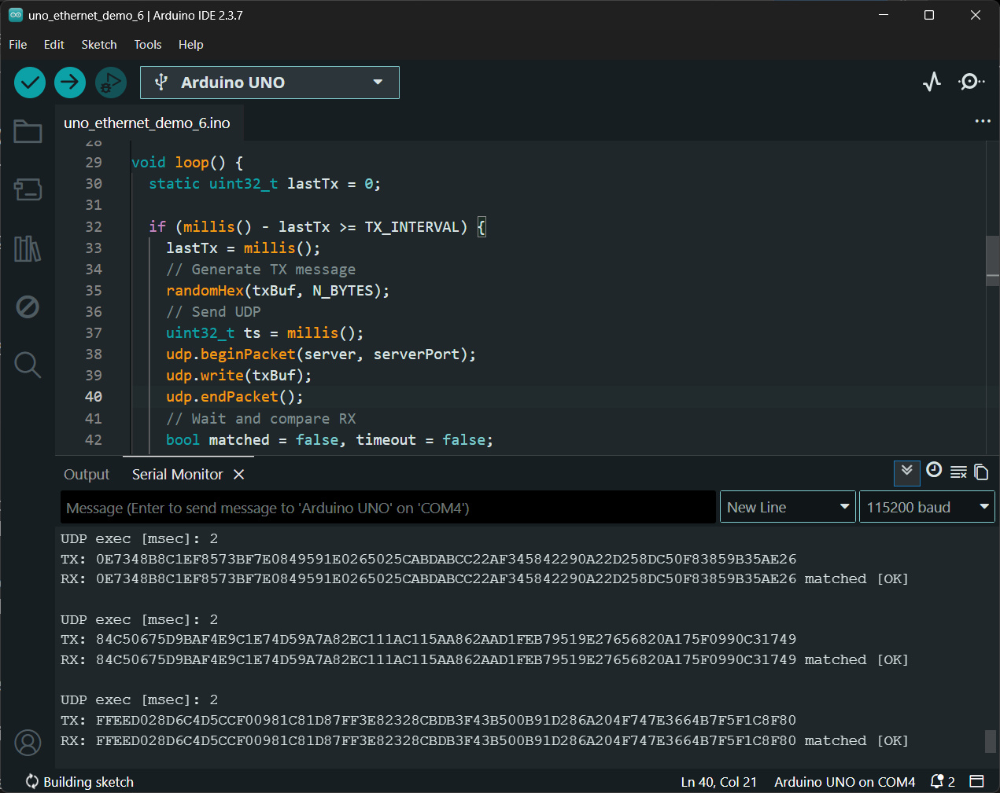
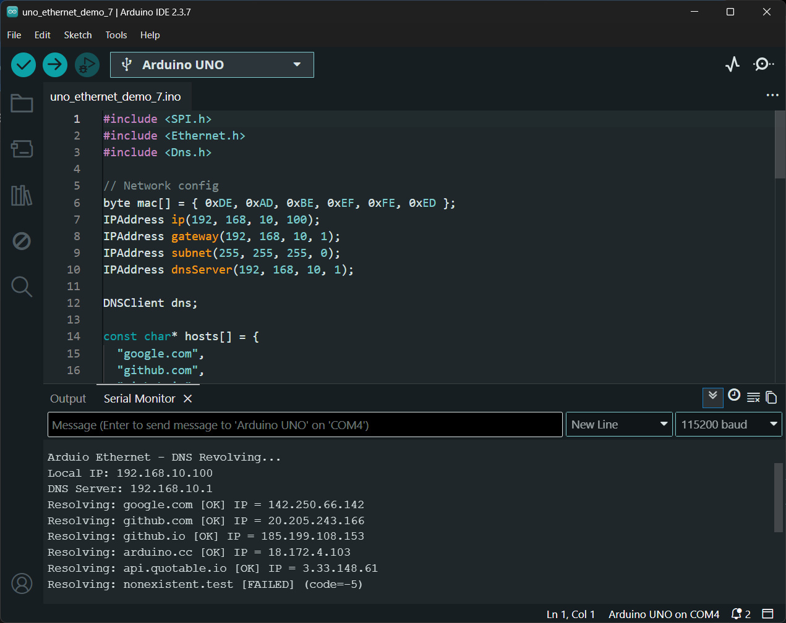
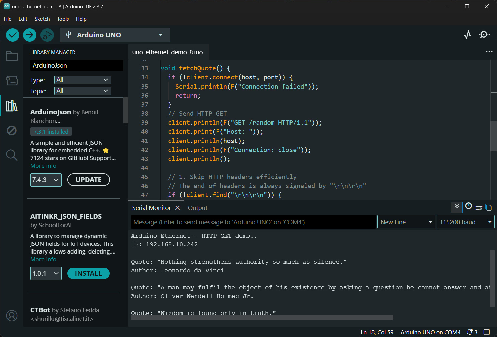
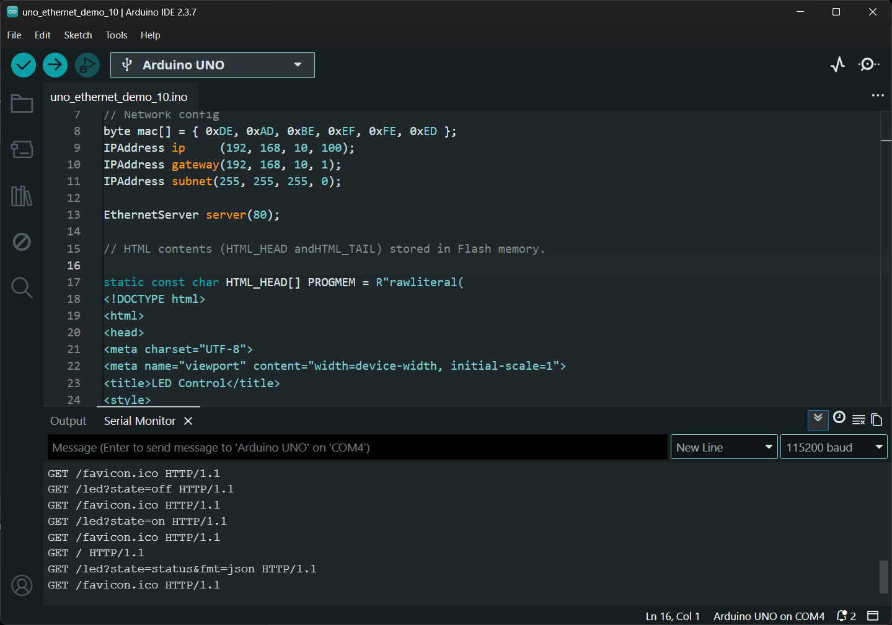
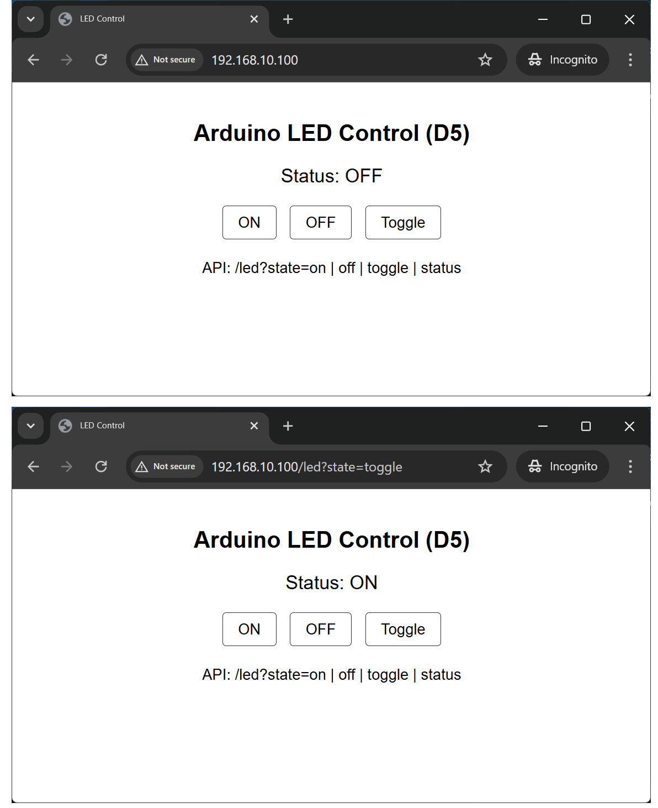
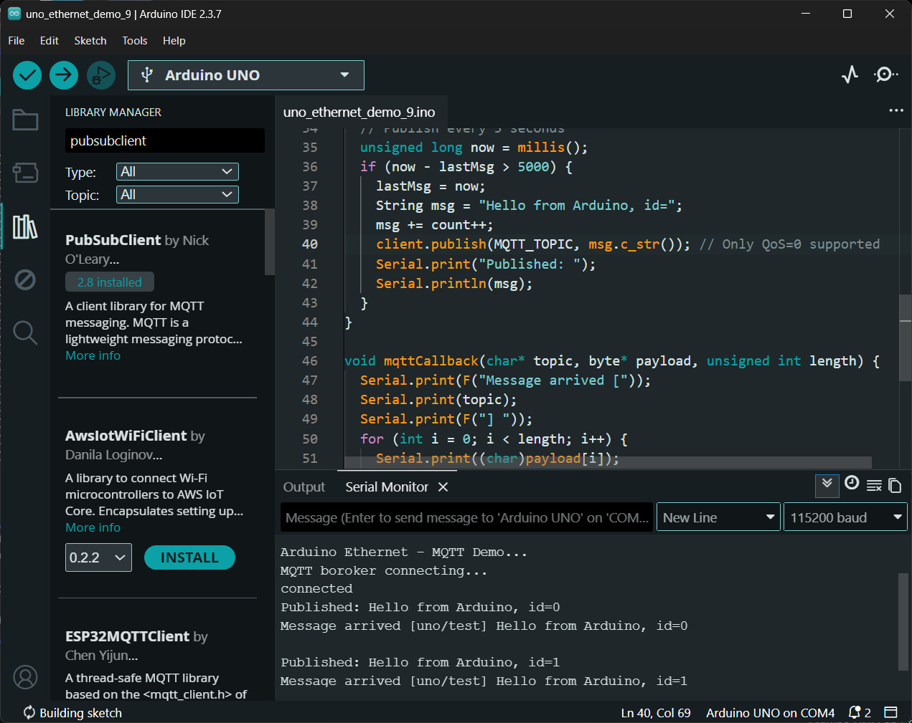

Arduino Uno + W5100 Ethernet Shield: Network Programming (ตอนที่ 2)#
Keywords: Arduino Uno, Arduino Ethernet Shield, Network Programming
- บอร์ด Arduino Uno กับการเชื่อมต่อระบบเครือข่าย LAN
- ตัวอย่างโค้ด: Arduino Ethernet - TCP Client
- ตัวอย่างโค้ด: Arduino Ethernet - UDP Client
- ตัวอย่างโค้ด: Arduino Ethernet - DNS Resolving
- ตัวอย่างโค้ด: Arduino Ethernet - HTTP GET
- ตัวอย่างโค้ด: Arduino Ethernet - HTTP Web Server
- ตัวอย่างโค้ด: Arduino Ethernet - MQTT Publish / Subscribe
▷ บอร์ด Arduino Uno กับการเชื่อมต่อระบบเครือข่าย LAN#
บอร์ด Arduino Uno และโมดูล Arduino Ethernet Shield (W5100) ถือว่าเป็นฮาร์ดแวร์ยุคแรก ๆ ของ Arduino.cc และสามารถจัดอยู่ในกลุ่มของฮาร์ดแวร์ ที่เป็น legacy / retired ได้ในบางกรณี อย่างไรก็ตาม บอร์ดลักษณะนี้ยังมีการผลิตและจำหน่ายจากประเทศจีน ซึ่งมีราคาถูกกว่าสินค้าต้นฉบับจาก Arduino.cc
บอร์ด Arduino Uno + W5100 ยังคงสามารถนำมาใช้เป็นตัวอย่างในการเรียนรู้ได้ แต่มีข้อจำกัดบางประการ เช่น
- ไม่รองรับ TLS/HTTPS ซึ่งเป็นมาตรฐานความปลอดภัยสำคัญในระบบเครือข่ายสมัยใหม่ (แนะนำให้ใช้ W5500 แทน W5100)
- ไม่รองรับการรับส่งข้อมูลความเร็วสูง
ในบทความนี้จะนำเสนอตัวอย่างการเขียนโค้ด Arduino สำหรับงานด้าน Network Programming ครอบคลุมการใช้งานโปรโตคอลต่าง ๆ เช่น TCP, UDP, HTTP และ MQTT
▷ ตัวอย่างโค้ด: Arduino Ethernet - TCP Client#
โค้ดตัวอย่างนี้ สาธิตการสื่อสารข้อมูลในระบบเครือข่ายด้วยโปรโตคอล TCP โดยให้ Arduino Ethernet ทำหน้าที่เป็น TCP Client
ระบบจะสร้างการเชื่อมต่อผ่าน TCP Socket ไปยังคอมพิวเตอร์ เช่น Raspberry Pi
(หมายเลข IP = 192.168.10.1) ที่รันโค้ด Python-based TCP Server บนพอร์ต 5000
บอร์ด Arduino จะส่งข้อความทีละหนึ่งบรรทัด ทุก ๆ 1 วินาที ไปยัง TCP Server
เมื่อเซิร์ฟเวอร์จะรับข้อความดังกล่าว และส่งกลับไปยังไคลเอนต์ (Client) ทันที
ในลักษณะการทำงานแบบ Echo / Loopback และข้อมูลที่ได้รับกลับมา จะถูกส่งออกทาง Serial
ของบอร์ด Arduino
ในตัวอย่างโค้ดจะเห็นได้ว่า มีการสร้างอ็อบเจกต์จากคลาส EthernetClient
และใช้ตัวแปรชื่อ client สำหรับอ้างอิงและเรียกใช้งานฟังก์ชันต่าง ๆ เช่น
int EthernetClient::connect( IPAddress ip, uint16_t port )ใช้สำหรับเชื่อมต่อไปยัง Serversize_t EthernetClient::print( const char[] )ใช้สำหรับส่งข้อมูลไปยัง Serversize_t EthernetClient::write(const uint8_t *buf, size_t size)ใช้สำหรับส่งข้อมูลไปยัง Serverint EthernetClient::available()ใช้สำหรับตรวจสอบว่ามีข้อมูลจาก Server เข้ามาหรือไม่int EthernetClient::read()ใช้สำหรับอ่านข้อมูลทีละ 1 ไบต์ ที่ได้จาก Serverint EthernetClient::read(uint8_t *buf, size_t size)ใช้สำหรับอ่านข้อมูลหลายไบต์ลงในบัฟเฟอร์uint8_t EthernetClient::connected()ใช้สำหรับตรวจสอบสถานะการเชื่อมต่อvoid EthernetClient::stop()ใช้สำหรับปิดการเชื่อมต่อ
#include <SPI.h>
#include <Ethernet.h>
byte mac[] = { 0xDE, 0xAD, 0xBE, 0xEF, 0xFE, 0xED };
IPAddress ip(192, 168, 10, 100); // Static IP address for Arduino Ethernet
IPAddress server(192, 168, 10, 1); // Server IP address
#define SERVER_PORT 5000
#define INTERVAL_MS 100
#define RECONNECT_MS 3000
#define BUF_LEN 64
EthernetClient client;
void setup() {
Serial.begin(115200);
delay(1000);
Serial.println("\n\n\nArduino Ethernet - TCP Client Demo...");
Ethernet.begin(mac, ip);
delay(1000);
}
void loop() {
static bool connected = false;
static uint32_t lastReconnect = 0;
static uint32_t lastSend = 0;
static uint32_t counter = 0;
// 1. Check connection and reconnect if necessary
if (!client.connected()) {
connected = false;
if (millis() - lastReconnect > RECONNECT_MS) {
lastReconnect = millis();
connected = tryConnect();
}
return;
}
// 2. send data periodically
if (millis() - lastSend >= INTERVAL_MS) {
char sbuf[BUF_LEN];
lastSend = millis();
snprintf(sbuf, sizeof(sbuf),
"seq_num=%lu,msg='hello'\n", counter++);
//client.print(sbuf);
client.write( sbuf, strlen(sbuf) );
client.flush();
}
// 3. read echo (Block Read)
int availableBytes = client.available();
if (availableBytes > 0) {
char rxBuf[BUF_LEN];
// Read up to the size of the Rx buffer
int bytesToRead = min(availableBytes, (int)sizeof(rxBuf));
int bytesRead = client.read((uint8_t*)rxBuf, bytesToRead);
if (bytesRead > 0) {
Serial.write((uint8_t*)rxBuf, bytesRead); // Bulk write to Serial
}
}
}
bool tryConnect() {
Serial.println("Trying to connect...");
client.stop();
if ( client.connect(server, SERVER_PORT) ) {
Serial.println("Connected to server");
return true;
} else {
Serial.println("Connection failed");
return false;
}
}
โค้ด Python TCP Server ต่อไปนี้ ใช้ไลบรารี asyncio
(เป็นส่วนหนึ่งของ Python 3 Standard Library)
เพื่อรองรับการทำงานแบบ Asynchronous I/O และใช้ในการทดสอบการสื่อสารในเครือข่าย
โดยคอยรับแพ็กเกตจาก Arduino Ethernet แล้วส่งกลับไปในลักษณะ Echo
import asyncio
HOST = "0.0.0.0"
PORT = 5000 # The server's TCP port number
async def handle_client(reader, writer):
addr = writer.get_extra_info("peername")
print(f"[+] Client connected: {addr}")
try:
while True:
try:
data = await asyncio.wait_for(reader.readline(), timeout=5.0)
if not data:
print(f"[-] Client disconnected: {addr}")
break
msg = data.decode(errors="ignore").strip()
print(f"RX {addr}: {msg}")
# Echo back
response = msg + "\n"
writer.write(response.encode())
await writer.drain()
except asyncio.TimeoutError:
print(f"[!] Timeout (no data) from {addr}")
break
except ConnectionResetError:
print(f"[!] Connection reset by peer: {addr}")
break
except asyncio.IncompleteReadError:
print(f"[!] Incomplete read from {addr}")
break
except Exception as e:
print(f"[!] Unexpected error {addr}: {e}")
finally:
try:
writer.close()
await writer.wait_closed()
except Exception:
pass
print(f"[x] Connection closed: {addr}")
async def main():
server = await asyncio.start_server(handle_client, HOST, PORT)
addr_list = ", ".join(str(sock.getsockname()) for sock in server.sockets)
print(f"TCP Server running on {addr_list}")
async with server:
await server.serve_forever()
if __name__ == "__main__":
try:
asyncio.run(main())
except KeyboardInterrupt:
print("\nServer stopped.")

รูป: ตัวอย่างข้อความเอาต์พุตใน Arduino Serial Monitor แสดงให้เห็นการส่งข้อความไปยัง TCP Server และข้อความที่ได้รับกลับมา
▷ ตัวอย่างโค้ด: Arduino Ethernet - UDP Client#
ตัวอย่างโค้ดนี้สาธิต การเขียนโปรแกรมให้ Arduino Ethernet
ทำงานเป็น UDP Client มีการใช้งานคลาส EthernetUDP
และอ้างอิงอ็อปเจกต์ที่ถูกสร้างขึ้นมา โดยใช้ตัวแปรชื่อ client รวมถึงการใช้ฟังก์ชันต่าง ๆ ที่เกี่ยวข้อง เช่น
uint8_t EthernetUDP::begin(uint16_t port)ใช้สำหรับเริ่มต้นการใช้งาน UDP และกำหนดหมายเลขพอร์ตของฝั่ง Client หากกำหนดเป็น0จะให้ระบบเลือกพอร์ตให้อัตโนมัติint EthernetUDP::beginPacket(IPAddress ip, uint16_t port)ใช้สำหรับเริ่มต้นการสร้าง UDP Packet เพื่อส่งออกไปsize_t EthernetUDP::write(const uint8_t *buffer, size_t size)ใช้สำหรับเขียนข้อมูลลงใน UDP Packet (buffer) ที่เตรียมจะส่งint EthernetUDP::endPacket()ใช้สำหรับส่ง UDP Packet ออกไปยังปลายทางจริงint EthernetUDP::parsePacket()ใช้สำหรับตรวจสอบว่ามี UDP Packet เข้ามาหรือไม่ หากมี จะคืนค่าขนาดของ Packet มิฉะนั้นจะคืนค่า0int EthernetUDP::read(unsigned char *buffer, size_t len)ใช้สำหรับอ่านข้อมูลจาก UDP Packet ที่ได้รับ และเก็บลงใน Buffer
ในตัวอย่างนี้ Arduino จะส่งข้อความแบบ Random Hex String
ที่มีขนาดความยาวคงที่ N=40 ไบต์ ทุก ๆ 500 msec
หลังจากส่งไปยัง UDP Server แล้ว จะรอรับข้อความตอบกลับ
โดยกำหนดค่า Timeout = 20 ms สำหรับการรอรับในแต่ละครั้ง
#include <SPI.h>
#include <Ethernet.h>
#include <EthernetUdp.h>
byte mac[] = { 0xDE, 0xAD, 0xBE, 0xEF, 0xFE, 0xED };
IPAddress ip(192, 168, 10, 100);
IPAddress server(192, 168, 10, 1);
const unsigned int serverPort = 5000;
EthernetUDP udp;
#define N_BYTES 40
#define TX_INTERVAL 500
#define RX_TIMEOUT 20
char txBuf[N_BYTES * 2 + 1];
char rxBuf[128];
void setup() {
Serial.begin(115200);
delay(1000);
Serial.println("\n\n\nArduino Ethernet - UDP Client Demo..");
Serial.flush();
Ethernet.begin(mac, ip);
delay(1000);
udp.begin(0); // 0 = choose random UDP local port automatically
randomSeed(analogRead(A3));
}
void loop() {
static uint32_t lastTx = 0;
if (millis() - lastTx >= TX_INTERVAL) {
lastTx = millis();
// Generate TX message
randomHex(txBuf, N_BYTES);
// Send UDP
uint32_t ts = millis();
udp.beginPacket(server, serverPort);
udp.write( txBuf, strlen(txBuf) );
udp.endPacket();
// Wait and compare RX
bool matched = false, timeout = false;
if (waitEcho(RX_TIMEOUT)) {
if (strcmp(txBuf, rxBuf) == 0) {
matched = true;
}
} else {
timeout = true;
}
uint32_t t_exec = millis() - ts;
Serial.print("\nUDP exec [msec]: ");
Serial.println(t_exec);
Serial.print("TX: ");
Serial.println(txBuf);
if (timeout) {
Serial.println("RX: Timeout [FAILED!]");
} else {
Serial.print("RX: ");
Serial.print(rxBuf);
if (matched) {
Serial.println(" matched [OK]");
} else {
Serial.println(" mismatched [FAILED]");
}
}
}
}
bool waitEcho(uint32_t timeoutMs) {
uint32_t start = millis();
while (millis() - start < timeoutMs) {
int packetSize = udp.parsePacket();
if (packetSize) {
int len = udp.read(rxBuf, sizeof(rxBuf) - 1);
if (len > 0) { rxBuf[len] = '\0'; }
return true;
}
}
memset(rxBuf, 0, sizeof(rxBuf));
return false;
}
void randomHex(char *out, int n) {
const char hex[] = "0123456789ABCDEF";
for (int i = 0; i < n * 2; i++) {
out[i] = hex[random(0, 16)];
}
out[n * 2] = '\0';
}
ตัวอย่างโค้ด Python - UDP Server สำหรับใช้ในการทดสอบการทำงานของ Arduino Ethernet
import asyncio
HOST = "0.0.0.0"
PORT = 5000
class UDPServerProtocol:
def connection_made(self, transport):
self.transport = transport
print(f"UDP Server running on {HOST}:{PORT}")
def datagram_received(self, data, addr):
msg = data.decode(errors="ignore").strip()
print(f"RX {addr}: {msg}")
# echo back
self.transport.sendto( msg.encode(), addr)
def connection_lost(self, exc):
print("[!] UDP connection lost (clean shutdown or error)")
if exc:
print("Error:", exc)
async def main():
loop = asyncio.get_running_loop()
transport, protocol = await loop.create_datagram_endpoint(
lambda: UDPServerProtocol(),
local_addr=(HOST, PORT),
)
try:
await asyncio.Future() # run forever
finally:
transport.close()
if __name__ == "__main__":
try:
asyncio.run(main())
except KeyboardInterrupt:
print("\nServer stopped.")

รูป: ตัวอย่างข้อความเอาต์พุตใน Arduino Serial Monitor แสดงให้เห็นการส่งข้อความไปยัง UDP Server และข้อความที่ได้รับกลับมา
▷ ตัวอย่างโค้ด: Arduino Ethernet - DNS Resolving#
โค้ดตัวอย่างนี้สาธิตการใช้งานบอร์ด Arduino Uno + Ethernet Shield (W5100) เพื่อทำการ แปลงชื่อโดเมน (Hostname) เป็นหมายเลข IP Address ด้วยโปรโตคอล DNS (Domain Name System)
ในโค้ดมีการใช้งานคลาส DNSClient
เพื่อสร้างอ็อบเจกต์สำหรับจัดการงานด้าน DNS (Domain Name Resolution)
โดยอ้างอิงผ่านตัวแปร dns และมีการเรียกใช้ฟังก์ชันที่สำคัญ เช่น
void begin( const IPAddress& aDNSServer )ใช้กำหนดหมายเลข IP ของ DNS Server ที่จะใช้ในการส่งคำร้องขอint getHostByName( const char* aHostname, IPAddress& aResult )ใช้สำหรับแปลงชื่อโดเมน (Hostname) ให้เป็นหมายเลข IP Address โดยผลลัพธ์จะถูกเก็บไว้ในตัวแปรaResultและคืนค่าเป็นสถานะของการทำงาน (เช่น สำเร็จหรือไม่สำเร็จ)
#include <SPI.h>
#include <Ethernet.h>
#include <Dns.h>
// Network config
byte mac[] = { 0xDE, 0xAD, 0xBE, 0xEF, 0xFE, 0xED };
IPAddress ip(192, 168, 10, 100);
IPAddress gateway(192, 168, 10, 1);
IPAddress subnet(255, 255, 255, 0);
// Use the DNS server of the gateway
IPAddress dnsServer(192, 168, 10, 1);
DNSClient dns; // <--
const char* hosts[] = {
"google.com",
"github.com",
"github.io",
"arduino.cc",
"api.quotable.io",
"nonexistent.test"
};
#define NUM_HOSTS (sizeof(hosts) / sizeof(hosts[0]))
void setup() {
Serial.begin(115200);
delay(1000);
Serial.println("\n\n\nArduio Ethernet - DNS Revolving...");
Ethernet.begin(mac, ip, gateway, gateway, subnet);
delay(1000);
Serial.print("Local IP: ");
Serial.println(Ethernet.localIP());
Serial.print("DNS Server: ");
Serial.println(dnsServer);
dns.begin(dnsServer); // <---
}
void loop() {
testDNS();
delay(5000);
}
void testDNS() {
for (int i = 0; i < NUM_HOSTS; i++) {
resolveHost( hosts[i] );
delay(1000);
}
Serial.println("---------------------------------\n");
}
void resolveHost(const char* host) {
IPAddress resolvedIP;
Serial.print("Resolving: ");
Serial.print(host);
int ret = dns.getHostByName(host, resolvedIP); // <--
if (ret == 1) {
Serial.print(" [OK] IP = ");
Serial.println(resolvedIP);
} else {
Serial.print(" [FAILED] (code=");
Serial.print(ret);
Serial.println(")");
}
}

รูป: ตัวอย่างข้อความเอาต์พุตใน Arduino Serial Monitor แสดงให้เห็นผลลัพธ์ของการติดต่อกับ DNS Server เพื่อแปลง Domain Name ให้เป็น IP Address ที่สอดคล้องกัน สำหรับโดเมนที่ใช้เป็นตัวอย่าง
▷ ตัวอย่างโค้ด: Arduino Ethernet - HTTP GET#
โค้ดตัวอย่างนี้สาธิตการใช้งานโปรโตคอล HTTP ด้วยวิธีการ GET
เพื่อส่งคำร้องขอ (HTTP Request) ไปยัง URL:
http://api.quotable.io/random
โดยเซิร์ฟเวอร์ จะตอบกลับข้อมูลในรูปแบบ JSON String ซึ่งประกอบด้วย ข้อความ Quote (คำคม / คำกล่าวที่เป็นข้อคิด) ในภาษาอังกฤษ และข้อมูลผู้ประพันธ์ (Author) จากนั้นโปรแกรมจะทำการประมวลผล (Parse) ข้อมูล JSON ดังกล่าว และแสดงผลเฉพาะข้อความ Quote และชื่อผู้ประพันธ์ทาง Serial Monitor
โค้ดตัวอย่าง มีการใช้งานไลบรารี <ArduinoJson.h> เวอร์ชัน 7.3.1 หรือ สูงกว่า
โค้ดนี้มีการสร้างอ็อบเจกต์ จากคลาส StaticJsonDocument<512>
ซึ่งจัดสรรหน่วยความจำแบบคงที่ขนาด 512 ไบต์
สำหรับใช้เก็บโครงสร้างข้อมูลภายในของ JSON หลังจากการ parse (parsed JSON)
#include <SPI.h>
#include <Ethernet.h>
#include <ArduinoJson.h>
byte mac[] = { 0xDE, 0xAD, 0xBE, 0xEF, 0xFE, 0xED };
IPAddress ip(192, 168, 10, 100);
IPAddress dns(192, 168, 10, 1);
IPAddress gateway(192, 168, 10, 1);
IPAddress subnet(255, 255, 255, 0);
char host[] = "api.quotable.io";
const int port = 80;
EthernetClient client;
void setup() {
Serial.begin(115200);
Serial.println("\n\n\nArduino Ethernet - HTTP GET demo..");
if (Ethernet.begin(mac) == 0) { // Try DHCP first
// On DHCP failure (0), fall back to static network config.
Ethernet.begin(mac, ip, dns, gateway, subnet);
}
delay(1000);
Serial.print("IP: ");
Serial.println(Ethernet.localIP());
}
void loop() {
fetchQuote();
delay(10000); // wait for 10 seconds.
}
void fetchQuote() {
if (!client.connect(host, port)) {
Serial.println(F("Connection failed"));
return;
}
// Send HTTP GET
client.println(F("GET /random HTTP/1.1"));
client.print(F("Host: "));
client.println(host);
client.println(F("Connection: close"));
client.println();
// 1. Skip HTTP headers efficiently
// The end of headers is always signaled by "\r\n\r\n"
if (!client.find("\r\n\r\n")) {
Serial.println(F("Invalid response or timeout"));
client.stop();
return;
}
// 2. Parse directly from the stream (no intermediate String)
StaticJsonDocument<512> doc; // JSON buffer up to 512 bytes
DeserializationError err = deserializeJson(doc, client);
if (err) {
Serial.print(F("Parse failed: "));
Serial.println(err.c_str());
} else {
const char *content = doc["content"];
const char *author = doc["author"];
if (content && author) {
Serial.print(F("\nQuote: \""));
Serial.print(content);
Serial.print(F("\"\nAuthor: "));
Serial.println(author);
}
}
client.stop();
}

รูป: ตัวอย่างข้อความเอาต์พุตใน Arduino Serial Monitor
แสดงผลลัพธ์ของการติดต่อกับ HTTP Server (api.quotable.io)
พอร์ต 80 โดยใช้วิธี HTTP GET
ซึ่งได้รับข้อมูลตอบกลับในรูปแบบ JSON จากนั้นโปรแกรมจะทำการประมวลผล
เพื่อเลือกเฉพาะข้อมูลที่สำคัญ และแสดงผลออกทาง Serial
▷ ตัวอย่างโค้ด: Arduino Ethernet - HTTP Web Server#
โค้ดตัวอย่างนี้สาธิตการสร้าง HTTP Server (พอร์ต 80) โดยใช้บอร์ด Arduino Uno ร่วมกับ W5100 Ethernet Shield
ภายในตัวอย่าง มีการสร้างหน้าเว็บแบบเรียบง่าย (HTML) เพื่อให้ผู้ใช้สามารถควบคุมสถานะของวงจร LED ที่เชื่อมต่อกับขา Arduino D5 ได้ เช่น
- สั่งเปิด (ON)
- สั่งปิด (OFF)
- สลับสถานะ (Toggle)
นอกจากนี้ ยังสามารถตรวจสอบสถานะของ LED ในรูปแบบข้อมูล JSON ผ่าน HTTP Request (เฉพาะ GET Method เท่านั้น) ได้อีกด้วย
โค้ดตัวอย่างมีการใช้หน่วยความจำ Flash (PROGMEM) สำหรับเก็บ HTML Contents เพื่อลดการใช้ SRAM ของ Arduino Uno
นอกจากนั้นแล้วยังมีการกำหนด API สำหรับเรียกใช้งาน เช่น
/led?state=on/led?state=off/led?state=toggle/led?state=status/led?state=status&fmt=json
#include <SPI.h>
#include <Ethernet.h>
#include <avr/pgmspace.h>
#define LED_PIN 5 // Arduino D5 Pin for LED output
// Network config
byte mac[] = { 0xDE, 0xAD, 0xBE, 0xEF, 0xFE, 0xED };
IPAddress ip (192, 168, 10, 100);
IPAddress gateway(192, 168, 10, 1);
IPAddress subnet(255, 255, 255, 0);
EthernetServer server(80);
// HTML contents (HTML_HEAD andHTML_TAIL) stored in Flash memory.
static const char HTML_HEAD[] PROGMEM = R"rawliteral(
<!DOCTYPE html>
<html>
<head>
<meta charset="UTF-8">
<meta name="viewport" content="width=device-width, initial-scale=1">
<title>LED Control</title>
<style>
body { font-family: Arial; text-align: center; margin-top: 40px; }
h2 { margin-bottom: 20px; }
.status { font-size: 20px; margin: 15px; }
a {
display: inline-block;
padding: 8px 16px;
margin: 5px;
text-decoration: none;
border: 1px solid #333;
border-radius: 4px;
color: black;
}
</style>
</head>
<body>
<h2>Arduino LED Control (D5)</h2>
)rawliteral";
static const char HTML_TAIL[] PROGMEM = R"rawliteral(
<div>
<a href="/led?state=on">ON</a>
<a href="/led?state=off">OFF</a>
<a href="/led?state=toggle">Toggle</a>
</div>
<p>API: /led?state=on | off | toggle | status</p>
</body>
</html>
)rawliteral";
void setup() {
pinMode(LED_PIN, OUTPUT);
digitalWrite(LED_PIN, LOW);
Serial.begin(115200);
Serial.println(F("\n\n\nArduino Ethernet - Web Server Demo..."));
Ethernet.begin(mac, ip, gateway, gateway, subnet);
delay(1000);
Serial.print(F("IP: "));
Serial.println(Ethernet.localIP());
server.begin(); // Start the HTTP server
}
void loop() {
// Check incoming client connection
EthernetClient client = server.available();
if (!client) return;
char req_line[80]; // HTTP request line (GET)
readRequestLine(client, req_line, sizeof(req_line));
Serial.println(req_line);
bool ledOn = digitalRead(LED_PIN);
if (strncmp(req_line, "GET /led", 8) == 0) {
char *p = strstr(req_line, "state=");
if (p) {
p += 6;
if (strncmp(p, "on", 2) == 0) { ledOn = true; }
else if (strncmp(p, "off", 3) == 0) { ledOn = false; }
else if (strncmp(p, "toggle", 6) == 0) { ledOn = !ledOn; }
digitalWrite(LED_PIN, ledOn ? HIGH : LOW);
}
if (strstr(req_line, "fmt=json")) {
sendJson(client, ledOn);
} else {
sendPage(client, ledOn);
}
} else {
sendPage(client, ledOn);
}
delay(1);
client.stop();
}
void sendProgmem(EthernetClient &client, const char *ptr) {
char buf[64];
size_t len = strlen_P(ptr);
for (size_t i = 0; i < len; i += sizeof(buf)) {
size_t chunk = min(sizeof(buf), len - i);
memcpy_P(buf, ptr + i, chunk);
client.write((uint8_t *)buf, chunk);
}
}
void sendHeaders(EthernetClient &client, const char *type="text/html") {
client.println(F("HTTP/1.1 200 OK"));
client.print(F("Content-Type: "));
client.println(type);
client.println(F("Connection: close"));
client.println();
}
void sendJson(EthernetClient &client, bool ledOn) {
sendHeaders(client, "application/json");
client.print(F("{\"led\":\""));
client.print(ledOn ? F("on") : F("off"));
client.println(F("\"}"));
}
void sendPage(EthernetClient &client, bool ledOn) {
sendHeaders(client);
sendProgmem(client, HTML_HEAD);
client.print(F("<p class='status'>Status: "));
client.print(ledOn ? F("ON") : F("OFF"));
client.println(F("</p>"));
sendProgmem(client, HTML_TAIL);
}
void readRequestLine(EthernetClient &client, char *buf, size_t len) {
size_t i = 0;
unsigned long t = millis();
while (client.connected() && millis() - t < 1000) {
if (client.available()) {
char c = client.read();
if (c == '\n') break;
if (c != '\r' && i < len - 1) { buf[i++] = c; }
}
}
buf[i] = '\0';
// flush headers
while (client.available()) client.read();
}

รูป: ตัวอย่างข้อความเอาต์พุตใน Arduino Serial Monitor แสดงผลลัพธ์ของการรับ HTTP Request (GET) เข้ามาจาก Web Browser

รูป: หน้าเว็บตัวอย่าง แสดงสถานะการทำงาน และการควบคุม LED
▷ ตัวอย่างโค้ด: Arduino Ethernet - MQTT Publish / Subscribe#
โค้ดตัวอย่างนี้สาธิตการใช้งานโปรโตคอล MQTT (Message Queuing Telemetry Transport) ในเบื้องต้น MQTT เป็นโปรโตคอลสื่อสารแบบ Publish/Subscribe เหมาะกับระบบ IoT (Internet of Things) โดยแทนที่จะสื่อสารแบบ Client–Server ตรง ๆ (เช่น HTTP/HTTPS) MQTT จะมีตัวกลางเรียกว่า Broker ทำหน้าที่รับ–ส่งข้อความระหว่างอุปกรณ์
ในการรับหรือส่งข้อมูล จะต้องระบุชื่อหัวข้อ (Topic) ในการสมัครรับข้อมูลหรือส่งข้อมูลไปยัง Broker และมีการกำหนดระดับความน่าเชื่อถือของการส่งข้อมูล หรือเรียกว่า QoS (Quality of Service) ในปัจจุบันมี Publish MQTT Broker ให้ทดลองใช้งานได้ฟรี เช่น HiveMQ และ Eclipse Mosquitto
บอร์ด Arduino Uno + Ethernet Shield (W5100) สามารถใช้งาน MQTT ได้
โดยอาศัยไลบรารี PubSubClient ซึ่งเป็นไลบรารีที่นิยมใช้มาก แต่ก็มีข้อจำกัด เช่น
- ไม่รองรับ TLS/SSL
- Publish รองรับเฉพาะ QoS 0
- Subscribe รองรับ QoS 0 และ QoS 1
- ไม่รองรับ QoS 2
- ขนาดของบัฟเฟอร์จำกัด (~128–256 ไบต์)
#include <SPI.h>
#include <Ethernet.h>
// https://github.com/knolleary/pubsubclient/
#include <PubSubClient.h>
// Network Settings
byte mac[] = { 0xDE, 0xAD, 0xBE, 0xEF, 0xFE, 0xED };
IPAddress ip(192, 168, 10, 100);
const char* MQTT_SERVER = "broker.hivemq.com";
const uint16_t MQTT_PORT = 1883;
const char* MQTT_TOPIC = "uno/test";
EthernetClient ethClient;
PubSubClient client(ethClient);
void setup() {
Serial.begin(115200);
Serial.println("\n\n\nArduino Ethernet - MQTT Demo...");
Ethernet.begin(mac, ip);
delay(1000);
client.setServer(MQTT_SERVER, MQTT_PORT);
client.setCallback(mqttCallback);
}
void loop() {
static unsigned long lastMsg = 0;
static uint8_t count = 0;
if (!client.connected()) { reconnect(); }
client.loop();
// Publish every 5 seconds
unsigned long now = millis();
if (now - lastMsg > 5000) {
lastMsg = now;
String msg = "Hello from Arduino, id=";
msg += count++;
client.publish(MQTT_TOPIC, msg.c_str()); // Only QoS=0 supported
Serial.print("Published: ");
Serial.println(msg);
}
}
void mqttCallback(char* topic, byte* payload, unsigned int length) {
Serial.print(F("Message arrived ["));
Serial.print(topic);
Serial.print(F("] "));
for (int i = 0; i < length; i++) {
Serial.print((char)payload[i]);
}
Serial.println("\n");
}
void reconnect() {
while (!client.connected()) {
Serial.println(F("MQTT boroker connecting..."));
// Create a random client ID
if (client.connect("ArduinoUnoClient")) {
Serial.println(F("connected"));
client.subscribe("uno/test/#", 1 /*QoS*/);
} else {
delay(5000);
}
}
}

รูป: ตัวอย่างข้อความเอาต์พุตใน Arduino Serial Monitor
แสดงผลลัพธ์ของการติดต่อกับ MQTT Broker (broker.hivemq.com
พอร์ต 1883) โดยทดลองส่งข้อมูลออกไป (Publish) และรอรับข้อมูลกลับมาด้วย
(Subscribe)
▷ กล่าวสรุป#
บทความนี้นำเสนอตัวอย่างการเขียนโค้ด Arduino Sketch และการใช้ไลบรารีที่เกี่ยวข้อง เพื่อใช้งานบอร์ด Arduino Uno ร่วมกับ Arduino Ethernet Shield (W5100) เช่น การเขียนโค้ดให้ Arduino Ethernet ทำหน้าที่เป็น TCP Client และ UDP Client เพื่อส่งข้อความและรอรับกลับแบบ Echo โดยมีโค้ด Python สำหรับทำหน้าที่เป็น TCP Server และ UDP Server ตามลำดับ
นอกจากนี้ยังมีตัวอย่างการติดต่อกับ DNS Server เพื่อแปลงชื่อ Host Name ให้เป็น IP Address รวมถึงการส่ง HTTP Request แบบ GET Method ไปยัง Web Server ที่ตอบกลับข้อมูลในรูปแบบ JSON
อีกทั้งยังมีตัวอย่างการสื่อสารด้วยโปรโตคอล MQTT โดยมีการรับ–ส่งข้อมูลกับ Public MQTT Broker เช่น HiveMQ
บทความที่เกี่ยวข้อง
This work is licensed under a Creative Commons Attribution-ShareAlike 4.0 International License.
Created: 2026-04-17 | Last Updated: 2026-04-19